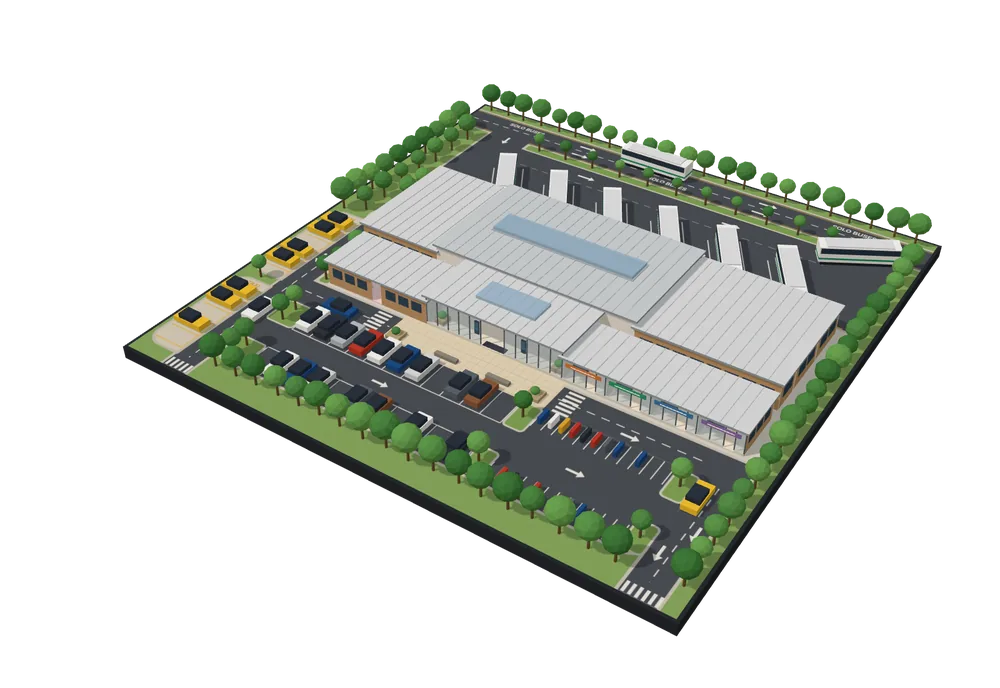
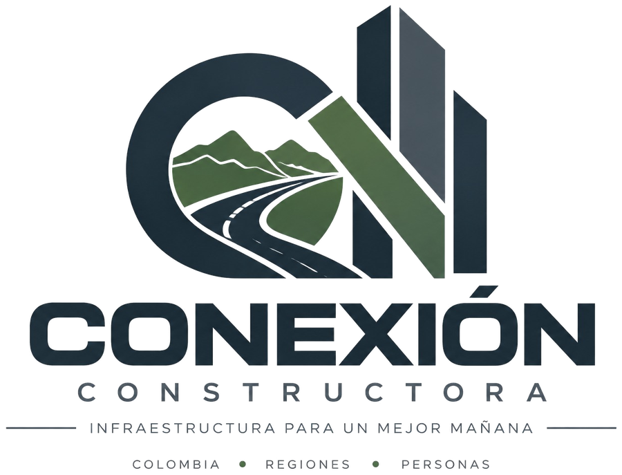

Proyecto de infraestructura y movilidad
Terminal Intermunicipal de Transporte de Pasajeros de Vélez
Una propuesta para centralizar, organizar y mejorar la movilidad regional.

- Plataformas
- 6 B1–B6
- Área construida estimada
- ≈ 2.000 m²
- Inversión estimada
- ≈ $13.030 M COP
- Zonas funcionales
- 4
01Problemática y contexto
Un municipio sin un punto central para el transporte intermunicipal
Actualmente, Vélez no cuenta con una terminal que centralice las operaciones del transporte intermunicipal. Las oficinas de las diferentes empresas transportadoras se encuentran dispersas dentro del municipio, lo que genera desorganización en los despachos, puntos de congestión y dificultades para establecer controles unificados.
-
01Dispersión de empresas transportadoras
Las oficinas de las empresas se ubican en distintos puntos del casco urbano, sin un lugar común para su operación.
-
02Desorganización de los despachos
Despachar desde puntos separados genera congestión y dificulta establecer controles unificados sobre la operación.
-
03Necesidad de centralización y mejor movilidad
La propuesta busca ofrecer una alternativa de organización espacial y operativa para mejorar la movilidad y la experiencia de los usuarios.
“Desorden y caos causado por el transporte público que afecta la eficiencia del sistema y la calidad de vida de los ciudadanos.”
¿Por qué Vélez?
Entre los municipios analizados durante la formulación (Facatativá, San Miguel, Puerto Carreño, Vélez y Barbosa), Vélez presentó la combinación más favorable para el proyecto:
- Ausencia de una terminal que centralice las operaciones.
- Dispersión de los servicios de las empresas transportadoras.
- Conectividad regional.
- Una necesidad reconocida por la propia administración municipal.
02La propuesta
Una terminal para centralizar, organizar y conectar
Diseñar una terminal intermunicipal que permita centralizar los servicios de transporte, organizar las operaciones de las empresas transportadoras y ofrecer espacios adecuados para pasajeros, conductores, trabajadores y comerciantes.
Mejorar la organización del transporte intermunicipal.
Facilitar el ascenso y descenso de pasajeros.
Centralizar los despachos.
Mejorar la comodidad y seguridad de los usuarios.
Organizar los flujos peatonales y vehiculares.
Fortalecer la conectividad regional.
Conexión estratégica
Vélez, entre la Troncal Central y la Transversal del Carare
Vélez es la capital de la Provincia de Vélez, que agrupa 20 municipios. Se conecta con la Troncal Central Nacional mediante la vía Barbosa–Vélez y con la región del Magdalena Medio mediante la Transversal del Carare.
La propuesta plantea una alternativa para reorganizar los despachos dispersos y articular la terminal con estos corredores.
Alcance académico de la propuesta
- Formulación y planeación: interesados, presupuesto, cronograma y gestión de riesgos.
- Diseño conceptual de zonificación y de flujos vehiculares y peatonales.
- Esquema preliminar en planta.
- Maqueta física académica de la infraestructura.
03Ubicación del proyecto
El sitio propuesto para la terminal
Punto definido por el equipo para localizar la Terminal Intermunicipal de Transporte de Pasajeros dentro del municipio de Vélez, Santander.
04Visualización 3D interactiva
Recorre la terminal en tres dimensiones
Modelo construido con geometrías a partir de la planta y la vista isométrica de la propuesta. Gíralo, acércalo y selecciona cada espacio para conocer su función y los elementos que contiene.
Selecciona cualquier espacio de la terminal para conocer su función y distribución.
Preparando el modelo 3D…
En celular: toca el modelo para activarlo, arrastra con un dedo para girar y usa dos dedos para acercar o desplazar. En computador: arrastra para girar, clic derecho para desplazar y clic + rueda para acercar.
Representación 3D conceptual: sigue la distribución de la planta de referencia y no es un modelo a escala ni un diseño definitivo. Los buses cuentan con una vía exclusiva de entrada y salida y un patio de maniobras independiente de los vehículos particulares. Mobiliario, vehículos y vegetación son ilustrativos.
05Distribución arquitectónica
Cuatro zonas que ordenan la operación
La distribución separa las áreas operativas, de atención al usuario, comerciales y exteriores para organizar los flujos peatonales y vehiculares alrededor de una edificación central.
06Galería
Imágenes del proyecto
Vistas y detalles del modelo 3D, boceto preliminar y cronograma de formulación. Toca una imagen para ampliarla.
07Beneficiarios e impacto
Una infraestructura pensada para todos los actores del transporte
Los beneficiarios no se limitan a quienes usan el servicio: incluyen a quienes participan en la operación de la terminal y a la población de su área de influencia.
-
Usuarios y pasajeros
Mejores condiciones de movilidad, accesibilidad, comodidad, seguridad e información durante la llegada, la espera, el abordaje y la salida.
-
Empresas transportadoras y conductores
Centralización de operaciones, organización de los despachos y espacios adecuados para sus actividades, incluido el descanso de los conductores.
-
Trabajadores de la terminal
Mejores condiciones para desarrollar funciones administrativas y operativas, y una coordinación más clara de las actividades.
-
Comunidad y actividades económicas
Mejor conectividad regional, oportunidades comerciales y potencial generación de empleo en el área de influencia.
08Objetivos de Desarrollo Sostenible
Un proyecto alineado con el ODS 9
La terminal de Vélez responde al Objetivo de Desarrollo Sostenible 9 de las Naciones Unidas: propone una infraestructura de transporte regional, organizada y de calidad, que apoya el desarrollo económico y el bienestar de quienes la usan.
Objetivo de Desarrollo Sostenible 9
Industria, innovación e infraestructura
Construir infraestructuras resilientes, promover la industrialización inclusiva y sostenible y fomentar la innovación.
¿Qué es el ODS 9?
Los Objetivos de Desarrollo Sostenible (ODS) son 17 objetivos, con 169 metas, que forman parte de la Agenda 2030 adoptada en 2015 por los Estados miembros de las Naciones Unidas. En Colombia, la estrategia para implementarlos se definió en el documento CONPES 3918 de 2018.
El ODS 9 parte de una idea: la infraestructura, como el transporte, la energía, el agua y las comunicaciones, es la base del desarrollo económico y de la calidad de vida de las comunidades. Se apoya en tres ejes:
- InfraestructuraFiable, sostenible, resiliente y de calidad, con acceso para todos.
- IndustrializaciónInclusiva y sostenible, que genere empleo y valor en los territorios.
- InnovaciónInvestigación y mejora de la capacidad tecnológica.
Meta 9.1 · la más relacionada con la terminal
“Desarrollar infraestructuras fiables, sostenibles, resilientes y de calidad, incluidas infraestructuras regionales y transfronterizas, para apoyar el desarrollo económico y el bienestar humano, haciendo especial hincapié en el acceso asequible y equitativo para todos.”
Cómo aporta la terminal a la meta 9.1
-
Infraestructura de calidad
Espacios definidos para cada actividad: sala de espera, taquillas, seis plataformas de abordaje, servicios sanitarios, zona de conductores, alimentación y locales comerciales.
-
Infraestructura regional
Centraliza el transporte intermunicipal de Vélez y fortalece la conectividad regional. La población del área de influencia se estima entre 169.000 y 196.050 habitantes.
-
Infraestructura fiable y organizada
Reúne los despachos de las empresas transportadoras, permite controles unificados y organiza los flujos peatonales y vehiculares, con una vía propia para los buses.
-
Desarrollo económico
Los locales comerciales y la zona de alimentación abren oportunidades para el comercio local, con potencial generación de empleo en el área de influencia.
-
Bienestar y acceso para todos
Mejores condiciones de movilidad, accesibilidad, comodidad, seguridad e información para pasajeros, conductores, trabajadores y comerciantes.
-
Por fortalecer en los diseños
Criterios de resiliencia, uso eficiente de energía y agua, y materiales y procesos constructivos sostenibles. No están definidos en esta propuesta y se recomiendan para la fase de diseños detallados.
La relación con el ODS 9 es un análisis del equipo del proyecto con fines académicos; no corresponde a una evaluación ni a una certificación oficial.
09Viabilidad y presupuesto
Estimación de la inversión en infraestructura
Como aún no existen diseños definitivos ni análisis de precios unitarios (APU), el costo se estima por analogía con el terminal de San Miguel (Putumayo) y se actualiza a diciembre de 2025 con los índices de costos de construcción del DANE.
Valor de referencia · diciembre de 2025
≈ $13.030millones COP
Cómo se compone el valor de referencia
-
Costo por referente (precios de 2019)
2.000 m² × $4,59 millones por m²
$9.180 M 70,5 %
-
Actualización a diciembre de 2025
Factor acumulado 1,419 (ICCV 2020–2021 e ICOCED 2022–2025)
≈ $3.850 M 29,5 %
- Área construida estimada
- ≈ 2.000 m²
- Población regional atendida
- 169.000 – 196.050 hab.
- Costo por m² de referencia
- ≈ $4,59 M/m²
Valor intermedio de un rango de 1.810 a 2.100 m², según la población regional atendida.
Base para aproximar el área construida de la terminal.
Terminal de San Miguel (Putumayo): $9.700 millones para 2.111 m², precios de 2019 (ENTerritorio, 2019).
¿Por qué no se suma AIU? El referente es un costo total que ya incorpora interventoría y gestión ambiental, social y predial; añadir AIU sobre ese total duplicaría componentes. El AIU deberá calcularse sobre el costo directo cuando existan diseños y APU.
Se trata de una estimación académica de orden de magnitud, no de un presupuesto de obra ni de una cotización. No incluye el predio, estudios técnicos detallados ni licenciamiento ambiental detallado.
La propuesta se desarrolla en un contexto académico (asignatura Administración para Ingenieros) y no representa una obra aprobada ni en construcción.
Índices de actualización (DANE)
| Año | Índice | Variación anual | Factor |
|---|---|---|---|
| 2020 | ICCV (vivienda) | 4,38 % | 1,0438 |
| 2021 | ICCV (vivienda) | 6,87 % | 1,0687 |
| 2022 | ICOCED (edificaciones) | 9,95 % | 1,0995 |
| 2023 | ICOCED (edificaciones) | 7,30 % | 1,0730 |
| 2024 | ICOCED (edificaciones) | 4,07 % | 1,0407 |
| 2025 | ICOCED (edificaciones) | 3,61 % | 1,0361 |
| 2020–2025 | Acumulado | — | 1,419 |
El ICCV se emplea para 2020–2021 y el ICOCED desde 2022, cuando este último reemplazó al primero para edificaciones (DANE, 2022–2026).
Ajuste frente a la formulación inicial
| Concepto | Corte I | Versión ajustada | Motivo |
|---|---|---|---|
| Costo por referente | $9.180 M | $9.180 M (precios de 2019) | Se aclara el año de precios. |
| AIU | $2.754 M | $0 | Se aplica al costo directo, no sobre un costo total. |
| Actualización | No incluida | ≈ +$3.850 M | Variación acumulada 2020–2025 (× 1,419). |
| Total | $11.934 M | ≈ $13.030 M | Se retira el AIU y se actualiza a diciembre de 2025. |
Fuente: control de cambios de la estimación de infraestructura (Entregable 2).
Limitaciones de la estimación
- Se apoya en un único referente ubicado en Putumayo, sin ajuste por diferencias de ubicación frente a Santander.
- Los índices del DANE miden cambios de costos de insumos y mano de obra de edificaciones, no de todos los componentes del proyecto, y la actualización no incluye lo corrido de 2026.
- No incluye predio, estudios técnicos detallados ni licenciamiento ambiental detallado.
- Como contraste, el terminal de Yarumal costó $6.000 millones en 2019; actualizado con el mismo factor se aproxima a $8.510 millones para un municipio de menor población. Su alcance es distinto y no se usa en el cálculo.
Riesgos identificados
- FinancieroDemora o bloqueo en la financiación de la obra.
- CronogramaSobrecostos y extensión de plazos.
- Predial / normativoPredio propuesto no apto por normativa de suelo.
- Operativo / ambientalAfectación de servicios públicos básicos durante la construcción u operación.
- NormativoIncumplimiento de requisitos legales de habilitación (Decreto 1079 de 2015).
Fuente: matriz de riesgos del documento de formulación del proyecto.
10Equipo del proyecto
Tres responsabilidades, un solo proyecto
Grupo 5 · Administración para Ingenieros · Semestre 2026B. El equipo se organiza por distribución de responsabilidades, no por una jerarquía rígida.

Empresa que presenta la propuesta
Conexión Constructora
Infraestructura para un mejor mañana
- Colombia
- Regiones
- Personas
-
Diseño conceptual y distribución espacial
José Daniel Nova Muñoz
Desarrollo del diseño conceptual de la terminal, su distribución y su representación espacial.
-
Coordinación general e investigación
Juan Sebastián Moreno Rizo
Coordinación del equipo, investigación del municipio y el sitio, seguimiento de avances e integración de los aportes.
-
Recursos, materiales y apoyo presupuestal
Joan Sebastian Moreno Aza
Organización de los recursos, identificación de los materiales y apoyo en los aspectos presupuestales.
Proceso de coordinación del trabajo
- Asignación de actividad
- Desarrollo
- Entrega del avance
- Revisión
- Ajustes
- Integración al proyecto

Vélez, Santander
Conectando a Vélez con nuevas oportunidades de movilidad
Una propuesta de infraestructura que busca organizar el transporte intermunicipal, mejorar la experiencia de los usuarios y fortalecer la conectividad de Vélez con su región.